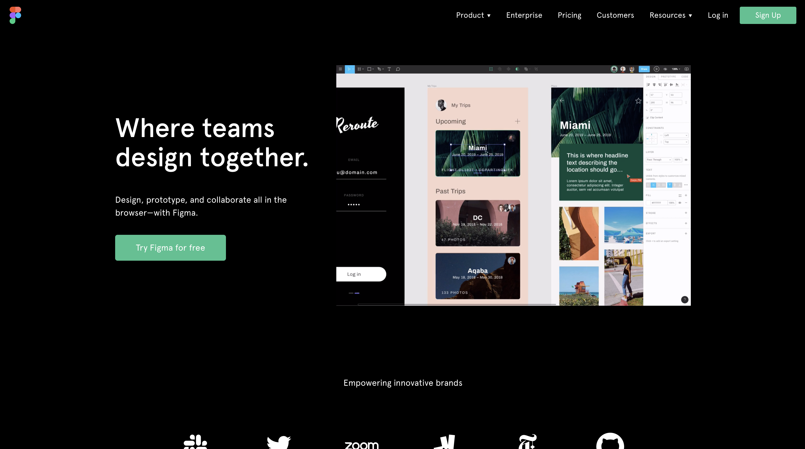

はじめてのFigma Plugin開発
Ginza.js #4
09/02
自己紹介

- なまえ: markey
- しごと: フロントエンドエンジニア
- すきる: React/TypeScript
- しゅみ: 日本語ラップ・MCバトル鑑賞
Figmaって？

- 最近勢いのあるデザインツール
- Web版・デスクトップアプリ版がある
- リアルタイム共同編集やURL共有が強み
じゃあFigma Pluginって？
- これまでもブラウザの拡張機能やWeb APIはあった
- Figmaのsandbox内で動作するのがPlugin
- 2019年8月にリリースされたばかり
神々のPlugin
- Googleスプレッドシートのデータを一発で埋め込むやーつ
https://twitter.com/DavidWilliames/status/1156503669707161600 - ディープラーニングで写真から人を消すやーつ
https://twitter.com/matamalaortiz/status/1163551129956954113
なんでFigma Pluginに興味を持ったか
- TypeScriptで書ける(型がある世界最高)👍
- 業務で使ってるし、最近勢いがある👍
- 動作の仕組みやデバッグ環境が面白い👍
Pluginの仕組み

ファイル構成
基本的にcode.tsとui.htmlを編集していく
.
├── README.md
├── code.js
├── code.ts
├── figma.d.ts
├── manifest.json
├── tsconfig.json
├── ui.html
36行で書いたプラグイン(DEMO)
// ui.html
<p><input id="text" /> <button id="zoom">Zoom Text</button></p>
<p id="message"></p>
<p><button id="close">Close Plugin</button></p>
<script>
document.getElementById('zoom').onclick = () => {
const textbox = document.getElementById('text')
const query = textbox.value
parent.postMessage({ pluginMessage: { type: 'zoom', query } }, '*')
}
document.getElementById('close').onclick = () => {
parent.postMessage({ pluginMessage: { type: 'close' } }, '*')
}
onmessage = event => {
const message = document.getElementById('message')
message.textContent = event.data.pluginMessage
}
</script>
// code.ts
figma.showUI(__html__)
figma.ui.onmessage = msg => {
if (msg.type === 'zoom') {
const searchNode = figma.currentPage.findOne(node => {
return node.type === 'TEXT' && node.characters === msg.query
})
if (searchNode) {
figma.viewport.scrollAndZoomIntoView([searchNode])
figma.ui.postMessage('お探しのテキストが見つかりました👍')
} else {
figma.ui.postMessage('お探しのテキストは見つかりませんでした👎')
}
} else if (msg.type === 'close') {
figma.closePlugin()
}
}
発展として...
普段のWeb開発のスキルがゴリゴリ使えて夢が広がる✨
- ビルドツールを使って複数ファイル構成
- ReactやVueで複雑なUIを構成
- 外部APIとのコラボレーション